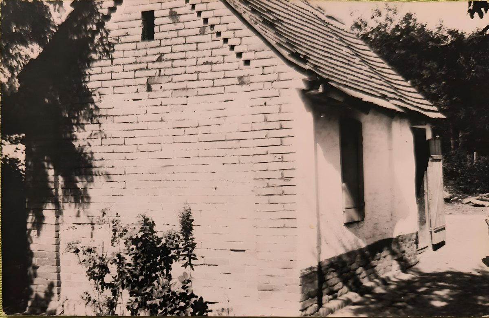
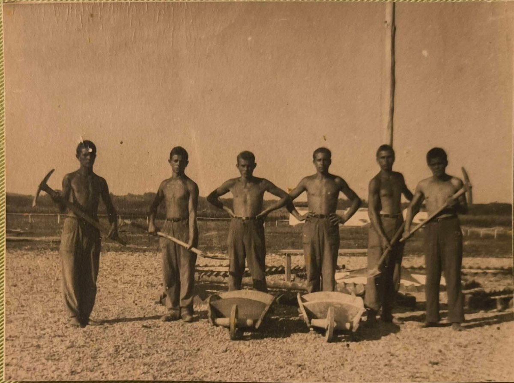
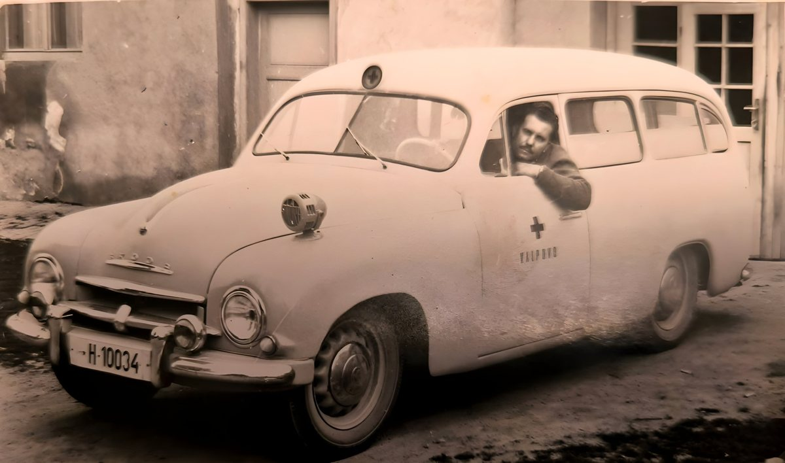
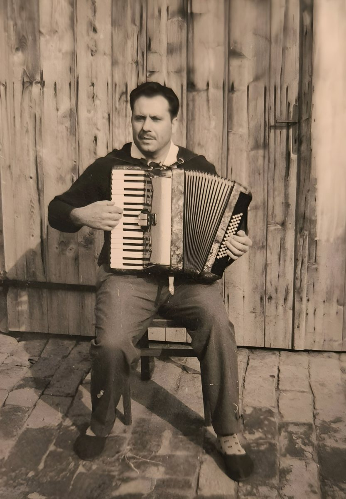
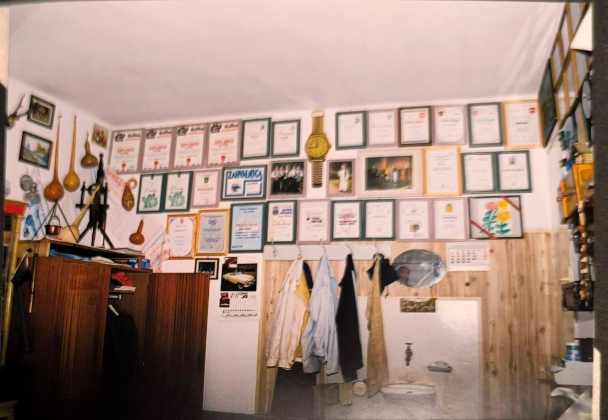
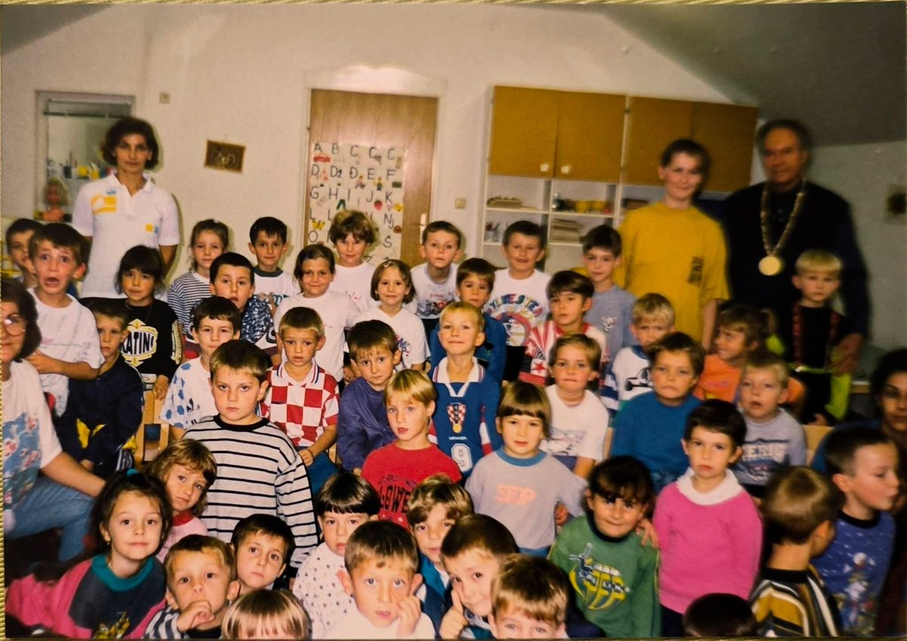
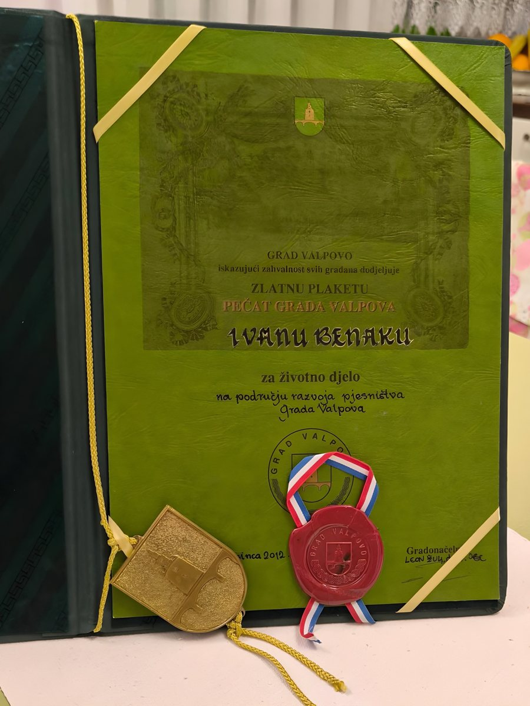

Životna priča Ivana Benaka
Istina o djetinjstvu koje nije štedjelo nikoga
The Life of Ivan Benak
The truth about a childhood that spared no one
Priča o čovjeku koji je iz najtežih životnih okolnosti izrastao u poznatog Valpovčanina, dobitnika Zlatne plakete „Pečat Grada Valpova“ za životno djelo.
The story of a man who rose from the hardest of circumstances to become a well-known citizen of Valpovo, awarded the town's Gold Plaque, the “Seal of the Town of Valpovo”, for his life's work.
Djetinjstvo u Ritskoj Adi
A childhood in Ritska Ada
Ivan Benak (29. 7. 1933. – 11. 5. 2015.) rođen je u selu Ritska Ada kraj Sopja, mjestu koje danas više ne postoji.
Ivan Benak (July 29, 1933 – May 11, 2015) was born in the village of Ritska Ada near Sopje, a place that no longer exists.
Rođen je u njemačkoj obitelji, u miru i skromnosti, sve dok tragedija nije razorila njihov dom. Kad mu je bilo tri godine, otac je jedne kobne noći na kartanju prokockao cijelu kuću i imanje. Kuća je pripala užaru, najbogatijem čovjeku u selu, udovcu s troje djece – onome kod kojeg će Ivanova majka kasnije morati raditi kao služavka. Ujutro je otac preminuo od infarkta, ostavivši ženu i troje djece bez ičega.
He was born into a German family and grew up in peace and modest circumstances, until tragedy destroyed their home. When he was three, his father gambled away the whole house and farm at cards one fateful night. The house went to the ropemaker, the richest man in the village, a widower with three children – the man for whom Ivan's mother would later have to work as a servant. The next morning his father died of a heart attack, leaving his wife and three children with nothing.
Selo im se smilovalo i dalo im na korištenje staru praonicu rublja na kraju sela – malu kućicu sa zemljanim podom. U njoj su godinama živjeli u krajnjoj bijedi, s jednim prasetom i kokošima, koje su u dugim zimskim noćima držali pod krevetom da se ne smrznu, ali i da bi svima bilo toplije.
The village took pity on them and let them use the old wash-house at the end of the village – a little house with an earthen floor. There they lived for years in utter poverty, together with a piglet and some hens, which on long winter nights they kept under the bed so that they would not freeze, and so that everyone would be a little warmer.

The little house at the end of the village in Ritska Ada, an old wash-house, where he lived for some years with his mother and two sisters
Majka je radila kao služavka kod užara, čovjeka koji je već uzeo njihovu kuću, a sada i majku njezinoj djeci. U početku nije smjela dovesti svoju djecu u užarevu kuću, iako je morala spavati kod njega i brinuti se o njegovoj djeci. Tek joj je kasnije, iz „milosti“, dopustio da ih dovede – ali djeca nisu smjela u „vlastitu“ kuću, nego su spavala u slami iznad svinjca, dok je majka radila sve poslove koje jedna žena može raditi.
His mother worked as a servant for the ropemaker, the man who had already taken their house and now took the mother from her children as well. At first she was not allowed to bring her children into his house, although she had to sleep there and look after his children. Only later, out of “mercy”, did he let her bring them – but the children were not allowed into their “own” house; they slept in the straw above the pigsty, while their mother did every job a woman can do.
Rane godine proveo je u Ritskoj Adi, među krdima krava, konja i svinja koje je svakodnevno pratio na ispašu. Bio je još dječak, ali dani su mu bili dugi i ispunjeni odgovornošću koju je nosio ozbiljnije nego što bi itko očekivao od njegovih godina. Često se kasnije prisjećao tog vremena – mirisa trave, zvuka vode i tišine koju prekida samo mukanje stoke.
He spent his early years in Ritska Ada among the herds of cows, horses and pigs that he took out to graze every day. He was still a boy, but his days were long and full of a responsibility he carried more seriously than anyone would expect at his age. Later he often remembered that time – the smell of the grass, the sound of the water, and a silence broken only by the lowing of the cattle.
Proljeća su imala svoj poseban ritam. Dok bi se zemlja budila, od mladih vrbovih grana pravio je frulice. Tanki, nježni zvuk tih malih svirala bio je njegov način da razbije samoću i da se, barem na trenutak, osjeti kao dijete koje se igra, a ne kao čuvar koji pazi na tuđu imovinu.
The springs had a rhythm of their own. As the earth awoke, he made little flutes from young willow twigs. The thin, gentle sound of those small pipes was his way of breaking the loneliness and feeling, at least for a moment, like a child at play rather than a watchman guarding other people's property.
No jedan se događaj urezao dublje od svih drugih. Jednog su dana krave, ničim izazvane, zaplivale preko Drave i nestale na obližnjem otoku. Obuzeo ga je strah koji ga je gotovo paralizirao. Gledao je za njima, nemoćan, a u glavi mu se vrtjelo samo jedno: kako će se vratiti u selo i pogledati vlasnicima u oči ako se stoka ne vrati.
But one event cut deeper than all the others. One day, for no reason at all, the cows swam across the Drava and disappeared onto a nearby island. A fear seized him that all but paralysed him. He watched them go, helpless, with only one thought going round in his head: how could he go back to the village and look the owners in the eye if the cattle did not come back?
Sjedio je na obali, srce mu je tuklo kao da će iskočiti, a vrijeme se rastezalo u beskraj. A onda – šum u vodi. Krave su se, kao da su se samo poigrale njegovim živcima, mirno vraćale natrag, jedna po jedna, sve dok posljednja nije kročila na obalu.
He sat on the bank, his heart pounding as if it would leap out of his chest, while time stretched on without end. And then – a splash in the water. As if they had only been playing with his nerves, the cows came calmly back, one by one, until the last of them stepped onto the bank.
Tog je dana sve dobro završilo, ali strah i neizvjesnost koje je osjetio ostali su s njim cijeli život. Ipak, kad bi pričao tu priču, uvijek bi se na kraju nasmiješio – kao da je u tom dječaku na obali Drave prepoznao početak vlastite snage.
That day it all ended well, but the fear and uncertainty he had felt stayed with him all his life. Still, whenever he told the story, he always smiled at the end – as if he recognised, in that boy on the bank of the Drava, the beginning of his own strength.
Kao mali, Ivan je ujutro gledao užarevu djecu kako dvorištem trče s vrućom šnitom kruha, koji je ispekla njegova majka, namazanom pekmezom. Molio je Boga da nekome ispadne u prašinu, da bi on i njegove sestre došli do slasnog zalogaja, jer su uvijek dobivali samo ostatke od užareve djece.
As a little boy, Ivan would watch the ropemaker's children run across the yard in the morning with warm slices of bread – baked by his own mother – spread with plum jam. He would pray to God that one of them might drop a slice in the dust, so that he and his sisters could have a tasty mouthful, because they only ever got the ropemaker's children's leftovers.
Mladost
Youth
Užar je inzistirao da Ivan kod njega uči zanat, ali bio je užasno grub i zlostavljao je dječaka, pa je Ivan s petnaest godina pobjegao u Čađavicu i zaposlio se kao pomoćni radnik na poljoprivrednom dobru.
The ropemaker insisted that Ivan learn his trade, but he was terribly harsh and abused the boy, so at fifteen Ivan ran away to Čađavica and found work as a labourer on a state farm.
U šesnaestoj godini ostao je bez majke, koju su život i nepravda potpuno slomili, a ubrzo je izgubio i sestru, koja je dugo bolovala od tuberkuloze. Starija se sestra ubrzo udala i otišla živjeti sa suprugom. Unatoč svemu, Ivan je izučio zanat traktorista i počeo raditi, no uskoro je napustio rodni kraj u potrazi za boljim životom.
At sixteen he lost his mother, whom life and injustice had completely broken, and soon afterwards he lost a sister, who had long been ill with tuberculosis. His elder sister soon married and went to live with her husband. In spite of everything, Ivan trained as a tractor driver and began to work, but before long he left his native region in search of a better life.
Godine 1950. otišao je na radnu akciju, kako bi se zemlja nakon Drugoga svjetskog rata što prije ponovno izgradila, a odslužio je i dvogodišnji vojni rok.
In 1950 he joined a voluntary work brigade, to help rebuild the country as quickly as possible after the Second World War, and he also served two years of military service.

Young men on a voluntary work brigade
Belišće i Valpovo
Belišće and Valpovo
U Belišću se zaposlio u pilani, zasnovao obitelj i živio u takozvanoj Pekmez ulici, jednoj od najpoznatijih ulica u Belišću. Stanovali su u potkrovlju bez vode i WC-a, ali imali su volju, zajedništvo i nadu u bolji život.
In Belišće he found work at the sawmill, started a family and lived in the so-called Pekmez (Jam) Street, one of the best-known streets in Belišće. They lived in an attic with no water and no toilet, but they had determination, each other, and hope for a better life.
Radom i upornošću napredovao je do predradnika u pilani, a dok je radio u Belišću, upisao je u Valpovu i večernju srednju školu. Krajem pedesetih postao je prvi vozač službenog vozila i vozila hitne pomoći u Domu narodnog zdravlja u Valpovu. Službeno je vozilo bilo američki Buick – i bio je to trenutak koji mu je zauvijek promijenio život.
Through hard work and persistence he rose to foreman at the sawmill, and while working in Belišće he also enrolled in evening secondary school in Valpovo. At the end of the 1950s he became the first driver of the official car and of the ambulance at the People's Health Centre in Valpovo. The official car was an American Buick – and that was the moment that changed his life for good.

At the wheel of the Valpovo health centre's ambulance
Kasnije je dobio službeni stan, a supruga posao u Domu zdravlja. Ubrzo je obitelj sagradila kuću u „Buržujskoj“ ulici. Iako je kao podunavski Švabo imao pravo i mogućnost vratiti se u Njemačku, gdje su mu nudili posao i imovinu, ostao je vjeran zemlji u kojoj se rodio i odrastao, unatoč teškim uvjetima.
Later he was given a flat that came with the job, and his wife found work at the health centre. Soon the family built a house in the “Bourgeois” street. Although, as a Danube Swabian, he had the right and the chance to go back to Germany, where he was offered work and property, he stayed true to the land where he was born and grew up, hard as the conditions were.
U Valpovu je dočekao mirovinu, plesao u KUD-u, svirao harmoniku za svoju dušu i pisao pjesme koje se i danas pamte. Osnovao je pjesničko društvo „Poeta“ i objavio šest knjiga pjesama. Neke su mu pjesme i uglazbljene, a najpoznatija je Ne budi me, majko, rano.
In Valpovo he worked until he retired, danced in the folk society, played the accordion for his own pleasure and wrote poems that are remembered to this day. He founded the poetry society “Poeta” and published six books of poems. Some of his poems were set to music, the best known being Don't Wake Me Early, Mother.

With his accordion, which he played for his own pleasure
Garaža, pjesme i djeca
The garage, the poems and the children
Najsretniji je bio u svojoj garaži, gdje je mogao stvoriti sve što bi zamislio. Dok je izrađivao ograde, prikolice i razne druge stvari, stvarao je i pjesme. Garaža je bila njegov mali svijet – prostor u kojem su njegova kreativnost i inovativnost dolazile do punog izražaja.
He was happiest in his garage, where he could make anything he could imagine. While he built fences, trailers and all sorts of other things, he also made poems. The garage was his little world – the place where his creativity and inventiveness came fully into their own.
Garaža je bila puna njegovih zahvalnica i priznanja s pjesničkih druženja i večeri. Na svaku je bio posebno ponosan, pa je svaka bila uredno uramljena i obješena na zid. Čuvao ih je kao dragocjene uspomene na sve pjesničke večeri na kojima je nastupio, jer su mu one značile pola života.
The garage was full of his certificates of thanks and awards from poetry gatherings and evenings. He was especially proud of every one of them, so each was neatly framed and hung on the wall. He kept them as precious reminders of all the poetry evenings where he had performed, because they meant half his life to him.

The garage wall, hung with his framed certificates and awards
Ponosio se svime što je stekao ni iz čega. Radio je posao koji je volio, jer su automobili i motori bili njegov san od najranijih dana. Svojim je rukama izgradio kuću, imao vikendicu i voćnjak, a sa svojim je pjesmama nastupao na brojnim priredbama.
He was proud of everything he had built up from nothing. He did a job he loved, for cars and engines had been his dream since his earliest days. He built a house with his own hands, had a weekend cottage and an orchard, and performed his poems at countless events.
Posebno je volio druženja s djecom – bio je rado viđen gost u vrtićima i školama, gdje su ga često pozivali da im čita svoje pjesme. Poznat diljem naše zemlje, uvijek je bio srdačno dočekan i iskreno poštovan.
He especially loved spending time with children – he was a welcome guest in kindergartens and schools, where he was often invited to read them his poems. Known throughout the country, he was always warmly received and sincerely respected.

Visiting a kindergarten
Volio je djecu, bio je iznimno vrijedan i inovativan, a obitelj je vodio čvrstom rukom, jer je znao kako je biti gladan i kako se nešto stvara teškim, mukotrpnim i upornim radom.
He loved children, he was exceptionally hard-working and inventive, and he led his family with a firm hand, because he knew what it was to be hungry and how things are built through hard, painstaking and persistent work.
Mi, djeca, znali smo često ostaviti hranu na tanjuru, a on je govorio da se hrana ne smije bacati. Ja, kao njegovo mlađe dijete, nisam mogla razumjeti o čemu tata priča, jer nikada nisam bila gladna – odrasla sam u blagostanju, u ulici u kojoj su stanovali imućni stanovnici našega grada.
We children would often leave food on our plates, and he would say that food must never be thrown away. As his younger child, I could not understand what Dad was talking about, because I had never been hungry – I grew up in comfort, in a street where the well-off people of our town lived.
Često je pričao priče iz djetinjstva koje nama djeci nisu bile stvarne, jer nismo mogli shvatiti da se nekada tako teško živjelo.
He often told stories from his childhood that did not seem real to us children, because we could not grasp that life had once been so hard.
Bio je iznimno društven i takvog ga poznaje većina naših sugrađana. Premda su mu se otvarala vrata dalekog svijeta, ostao je vjeran Valpovu – gradu koji mu je dao posao, dom i smisao. Tu je povezanost čuvao sve do posljednjeg dana.
He was exceptionally sociable, and that is how most of our fellow citizens knew him. Although the doors of the wide world were open to him, he stayed true to Valpovo – the town that gave him work, a home and a purpose. He cherished that bond until his last day.
I danas, kad ga se netko sjeti i spomene „gospodina Ivana Benaka“, moje srce zatreperi od radosti, jer znam da je ispunio svoj san – izdići se iz prašine siromaštva i živjeti život dostojan čovjeka.
Even today, when someone remembers him and speaks of “Mr Ivan Benak”, my heart trembles with joy, because I know he fulfilled his dream – to rise from the dust of poverty and live a life worthy of a human being.
Kruna životnog puta
The crown of a life's journey
Svojim neumornim trudom, predanim zalaganjem, bogatim znanjem i nesebičnim radom u zajednici Ivan Benak ostavio je dubok trag u kulturnom životu Valpova. Prepoznajući njegov iznimni doprinos, Grad Valpovo dodijelio mu je 3. prosinca 2012. Zlatnu plaketu „Pečat Grada Valpova“ za životno djelo na području razvoja pjesništva, iskazujući zahvalnost svih građana za sve što je svojim stvaralaštvom dao svome gradu.
Through his tireless effort, dedication, rich knowledge and selfless work in the community, Ivan Benak left a deep mark on the cultural life of Valpovo. In recognition of his exceptional contribution, on December 3, 2012 the Town of Valpovo awarded him the Gold Plaque, the “Seal of the Town of Valpovo”, for his life's work in developing poetry in the town, expressing the gratitude of all its citizens for everything his creative work had given it.

The gold plaque “Seal of the Town of Valpovo” for lifetime achievement, December 3, 2012
To je priznanje bilo kruna njegova životnog puta – puta koji je započeo u skromnosti i siromaštvu, a završio kao potvrda da čovjek upornošću, radom i vjerom u ono što nosi u sebi može izrasti u poštovanog i cijenjenog člana zajednice.
That award was the crown of his life's journey – a journey that began in hardship and poverty and ended as proof that, through persistence, work and faith in what he carries within, a person can grow into a respected and valued member of the community.
I sada, kad se prisjetimo dječaka s početka ove priče, jasno vidimo koliko je upornošću postigao u životu. Ovo je priča o čovjeku koji je iz siromaštva, nepravde i gladi izgradio život dostojan poštovanja.
And now, when we think back to the boy at the beginning of this story, we can see clearly how much he achieved in life through sheer persistence. This is the story of a man who, out of poverty, injustice and hunger, built a life worthy of respect.
Zanimljivo je da je iz tako teškog života uspio iznjedriti vesele i vedre pjesme, pune ljubavi koju je nesebično dijelio sa svima. Unatoč teretu koji je nosio na leđima, nije poklekao – naprotiv, uvijek je tražio ono dobro, ono svjetlo, i tu je vedrinu pretakao u svoje pjesme.
It is remarkable that out of such a hard life he could bring forth such cheerful, bright poems, full of the love he shared so generously with everyone. For all the weight he carried on his shoulders, he did not give in – on the contrary, he always looked for the good, for the light, and he poured that brightness into his poems.